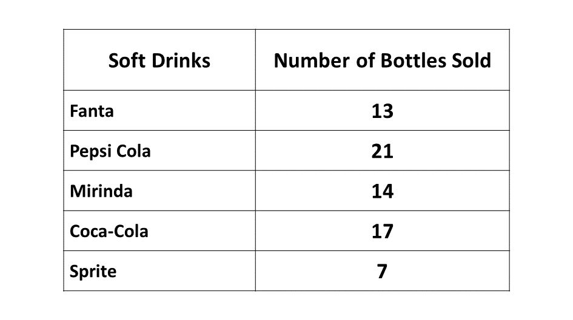

BECE
Year to Practice:
1990
1991
1992
1993
1994
1995
1996
1997
1998
1999
2000
2001
2002A
2002B
2003
2004
2005
2006
2007
2008
2009
2010
2011
2012
2013
2014
2015
2016
2017
2018
2019
2020
2021
2022
2023
PAST QUESTIONS 1994
Section A
Kindly check back later as our website is still in the process of being built.
Section B
Try the questions first, using not more than 15 minutes for each question, and watch the accompanying videos to see how the questions are solved.
Question 1
\(a)\) Multiply \((a - b)\) by \((2b - a)\)
\(b)\) Find the truth set of \(2x - 6 \le 5(3 - x)\)
Illustrate your answer on a number line.
\(c)\) Given that \(\mathbf{u}=\begin{pmatrix}-2 \\ 3 \end{pmatrix}\) and \(\mathbf{v}=\begin{pmatrix}2 \\ 6 \end{pmatrix}\), find \(\frac{1}{3}(\mathbf{u}+\frac{1}{2}\mathbf{v})\).
Question 2
\(a)\) A ladder leans against a wall. The end of the ladder touches the wall 12 m from the ground. The foot of the ladder is 9 m away from the foot of the wall.
\(\hspace{0.5cm} i)\) What is the length of the ladder?
\(\hspace{0.5cm} ii)\) Calculate the angle that the ladder makes with the ground.
\(b)\) Given that \(\pi = 3.14\) and \(g = 20\), find the value of \(F\) in the Relation \(F = \frac{3\pi g^2}{4}\)
Question 3
Using a ruler and a pair of compasses only;
\(a)\) Construct triangle \(PQR\) in which \(|PQ| =\) 8 cm, \(\angle QPR = 45^\circ\) and \(\angle PQR = 90^\circ\). Measure \(|QR|\).
\(b)\) Construct the mediator of \(PQ\) to meet \(PR\) at the point \(S\). With \(S\) as center and radius 3 cm, construct a circle.
Question 4
Using a scale of 2 cm to 1 unit on both axes, draw two perpendicular lines \(Ox\) and \(Oy\) on a graph sheet, mark the \(x-\)axis from \(-5\) to \(5\), and \(y-\)axis \(-6\) to \(6\). Mark the origin \(O\).
\(i)\) Draw on the same graph sheet indicating in each case the coordinates of all vertices of the square \(ABCD\) where \(A(1, 2)\), \(B(4, 2)\), \(C(4, 5)\) and \(D(1, 5)\) are the respective points.
\(ii)\) Using the \(y-\)axis as a mirror line draw the image \(A_1B_1C_1D_1\) of square \(ABCD\) where \(A \rightarrow A_1\), \(B \rightarrow B_1\), \(C \rightarrow C_1\), \(D \rightarrow D_1\)
\(iii)\) Draw the enlargement \(A_2B_2C_2D_2\) of the square with scale factor \(-1\) from \(O\), such that \(A \rightarrow A_2\), \(B \rightarrow B_2\), \(C \rightarrow C_2\), \(D \rightarrow D_2\).
\(iv)\) What single tranformation maps \(A_2B_2C_2D_2\) to \(A_1B_1C_1D_1\)?
Question 5
The following shows the distribution of sales of soft drinks sold by Jatokrom JSS canteen in one week.
Draw a pie chart to illustrate the sales.